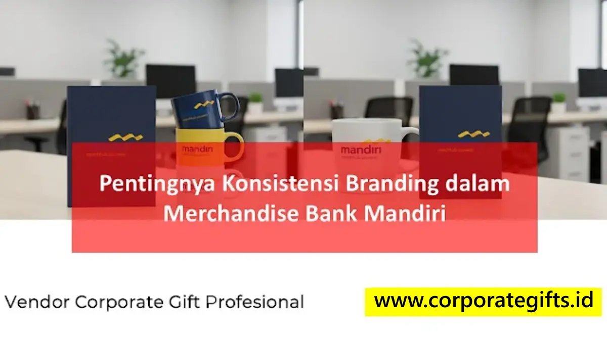

Pentingnya Konsistensi Identitas Brand Perbankan Nasional
Corporate Gifts ID - Konsistensi branding dalam ekosistem merchandise Bank Mandiri mencakup harmonisasi warna, logo, tipografi, serta pesan merek pada seluruh lini cinderamata korporat. Bagi institusi perbankan terkemuka, setiap barang yang dihadirkan dalam acara resmi bukan sekadar instrumen promosi pelengkap, melainkan duta fisik (physical touchpoint) yang mencerminkan stabilitas finansial, kredibilitas, dan profesionalisme tingkat tinggi.
Dalam dunia perbankan di mana kepercayaan publik adalah modal utama, penyimpangan visual terkecil seperti logo yang buram, warna biru yang meleset dari palet resmi, atau material yang rapuh dapat mengikis persepsi kualitas yang telah dibangun bertahun-tahun. Oleh karena itu, pengadaan merchandise perusahaan wajib mengacu pada standar brand guideline yang ketat.
Merchandise sebagai Cermin Nilai dan Budaya Bank Mandiri
Menjaga keseragaman identitas visual membutuhkan pengawasan detail teknis pada setiap elemen media:
- Akurasi Palet Warna Pantone (PMS): Karakteristik biru tua yang melambangkan keteguhan dan aksen pita emas yang mencerminkan kemakmuran harus ditransfer secara akurat pada permukaan bahan logam, kulit sintetis, hingga kain berpori.
- Penerapan Logo & Safe Zone: Penempatan logo Bank Mandiri pada barang seperti agenda kerja atau pulpen putar harus mematuhi area bebas pandang (clear space) tanpa pemotongan margin yang berlebihan.
- Kualitas Kemasan Hardbox: Kemasan box kaku berbalut kertas linen bertekstur, dilengkapi busa eva cut berpresisi tinggi serta kartu ucapan berlogo foil, mengubah hadiah sederhana menjadi pengalaman serah terima yang berwibawa.

Kombinasi warna korporat biru dan aksen emas pada cenderamata eksklusif nasabah prioritas.
Kurasi Merchandise Berdasarkan Konteks Acara Formal
Kesesuaian antara profil audiens penerima dan jenis merchandise sangat menentukan keberhasilan komunikasi brand:
- Serah Terima Jabatan & Dewan Direksi: Membutuhkan item bernilai prestisius seperti executive pen set berbalut logam berlapis krom, plakat kristal optik 3D laser engraving, atau tas dokumen kulit asli berinisial penerima.
- Apresiasi Nasabah Prioritas (Wealth Management): Mengutamakan kenyamanan personal bernilai fungsional harian, misalnya vacuum flask berinsulasi tinggi, charger nirkabel meja, atau payung lipat otomatis berbingkai fiberglass kuat.
- Acara Sosialisasi & Gathering Korporat: Memanfaatkan totebag kanvas heavy duty ramah lingkungan, buku catatan agenda spiral berstempel logo deboss, serta tumbler ramah lingkungan yang praktis dibawa beraktivitas.
Tabel Matriks Standar Pengadaan Merchandise Perbankan Resmi
Panduan matriks pengadaan untuk divisi pengadaan dan tim komunikasi korporat perbankan:
| Kategori Acara / Momentum | Rekomendasi Item Merchandise | Spesifikasi Kustomisasi Brand | Dampak Reputasi |
|---|---|---|---|
| Pisah Sambut & Direksi | Plakat Kristal Optik & Pen Set Logam | Laser grafir presisi & hardbox beludru biru | Mempertegas wibawa dan apresiasi institusional |
| Nasabah Wealth Prioritas | Executive Gift Box (Tumbler + Wireless Pad) | Deboss foil emas pada cover kulit & box magnetik | Meningkatkan kepuasan dan loyalitas jangka panjang |
| Event Edukasi & Seminar B2B | Paket Seminar Kit (Agenda + Pen + Totebag) | Sablon presisi warna Pantone resmi korporat | Memperluas brand recall publik secara konsisten |
| Program ESG & Sustainability | Eco Tumbler Stainless SUS 304 & Bambu | Grafir halus minimalis dengan sertifikasi food-grade | Menunjukkan kepeloporan perbankan ramah lingkungan |
Integrasi Nilai Keberlanjutan (ESG) dalam Merchandise Bank
Sejalan dengan komitmen keuangan berkelanjutan (Sustainable Banking), Bank Mandiri dan institusi keuangan terkemuka lainnya kini mengintegrasikan kriteria ramah lingkungan dalam rantai pasok pengadaan merchandise. Memilih material yang dapat didaur ulang, seperti stainless steel SUS 304 tahan karat, serat gandum organik, kayu bersertifikat legal, serta kemasan kertas tanpa laminasi plastik, membuktikan bahwa modernitas dan tanggung jawab ekologis dapat berjalan selaras.
Sistem Quality Control Vendor Berstandar Industri B2B
Menjaga konsistensi branding di ratusan kantor cabang membutuhkan kemitraan dengan vendor souvenir profesional yang memiliki prosedur kendali mutu (Quality Control) teruji. Langkah ini mencakup pembuatan dummy mockup digital 3D, pengujian sampel fisik pra-produksi (golden sample approval), hingga inspeksi cacat kemasan sebelum proses ekspedisi dilakukan.
Kesimpulan Praktis
Konsistensi branding pada merchandise Bank Mandiri bukan semata perihal dekorasi visual, melainkan strategi investasi reputasi yang memperkokoh identitas perbankan di setiap interaksi nyata. Dengan standar guideline yang disiplin, kurasi item yang relevan, serta pengawasan mutu tanpa kompromi, setiap cenderamata yang dibagikan akan senantiasa mencerminkan keunggulan dan integritas korporasi.
Rencanakan pengadaan merchandise perbankan dan cenderamata korporat Anda bersama tim spesialis CorporateGifts.ID. Kirimkan brief acara Anda melalui form permintaan penawaran resmi (RFQ) atau diskusikan kebutuhan Anda via katalog Merchandise Perusahaan kami.
Pertanyaan Seputar Merchandise Bank Mandiri (FAQ)

Ditulis oleh: Sholikhatun Nikmah
Merchandise Production & Print SpecialistSpesialis teknik manufaktur merchandise, teknologi sablon industri, dan penjaminan mutu cetak souvenir instansi di CorporateGifts.ID.
Lihat Profil Lengkap & Panduan Lainnya